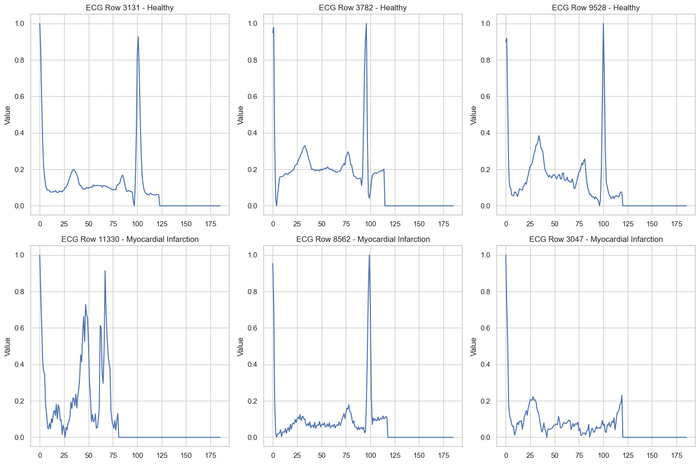
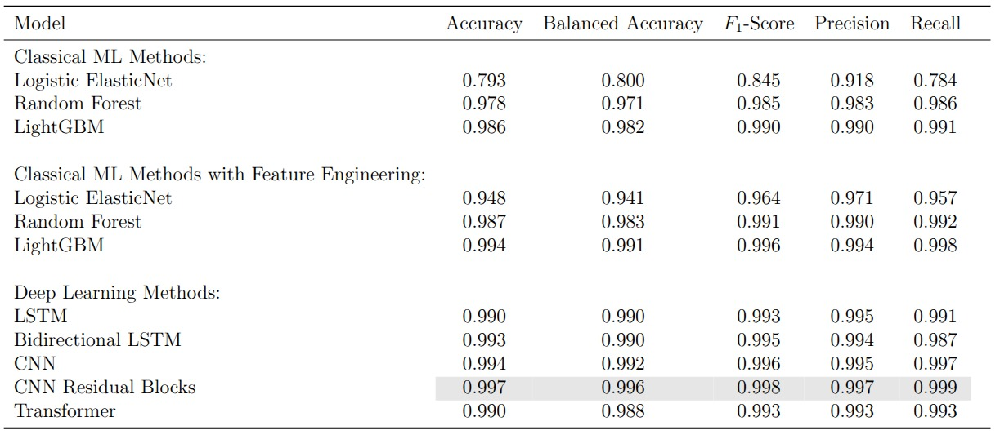
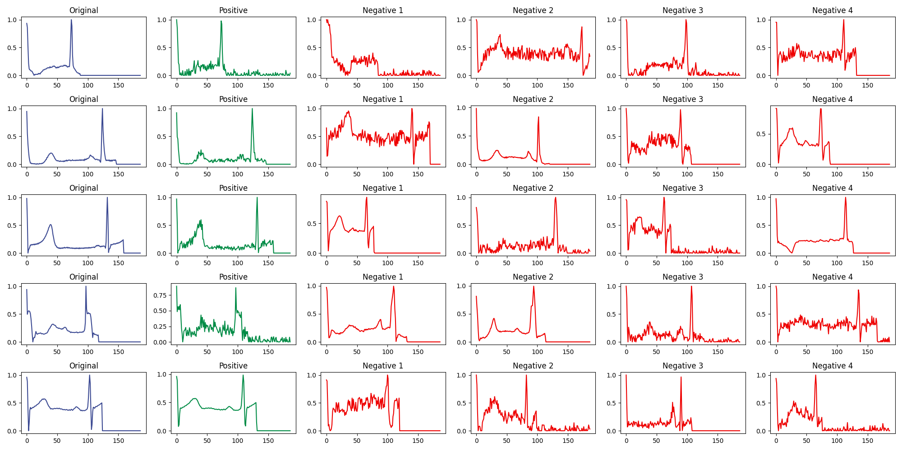
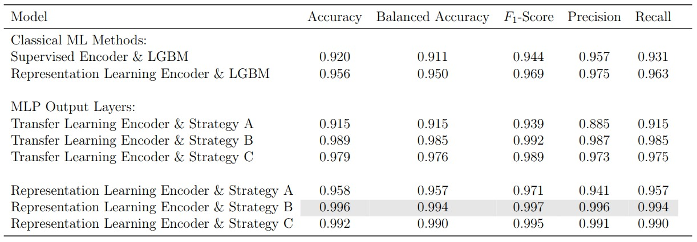

1 Introduction
An electrocardiogram (ECG) records the electrical impulses that coordinate every heartbeat. Cardiologists have relied on these waveforms for over a century, learning to spot the subtle deflections that distinguish a healthy heart from one that has suffered a myocardial infarction. The question we explore in this post is whether machine learning can do the same, and if so, which family of models is best suited for the task.
The project uses two publicly available ECG datasets. The first, PTB, contains binary-labeled recordings (healthy vs. myocardial infarction) and serves as the primary benchmark for comparing supervised classifiers. The second, MIT-BIH, contains five arrhythmia classes and is used to study transfer learning and learned representations. We train a wide range of models, from logistic regression all the way to transformers, and ask three questions along the way. Can classical methods compete with deep learning on raw ECG signals? What happens when we add hand-crafted features? And can self-supervised pretraining on one dataset help us classify another?
2 The Data
The PTB dataset consists of single-lead ECG recordings, each represented as a univariate time series. Every patient is labeled as either healthy or having suffered a myocardial infarction. The label distribution is noticeably skewed: patients with myocardial infarction outnumber healthy controls by roughly two to one.

This imbalance matters because a classifier that always predicts the majority class already achieves roughly 72% accuracy without learning anything meaningful. To counter this, we apply SMOTE (Synthetic Minority Oversampling Technique, Chawla et al. (2002)) to the training set. SMOTE generates synthetic minority-class examples by interpolating between existing ones, which both balances the class distribution and acts as a form of data augmentation. We never apply it to the validation or test data.
Another characteristic of the dataset is that all recordings are zero-padded to a uniform length. The amount of padding varies considerably across patients, reflecting natural differences in recording duration.

Even from these raw traces, certain visual differences stand out. The healthy recordings tend to exhibit clean, well-defined waveform components, while some of the myocardial infarction recordings display broader, more irregular morphologies.
3 Classical Machine Learning
3.1 Elastic Net Logistic Regression
Logistic regression models the probability of myocardial infarction as a linear function of the input passed through a sigmoid:
\[ P(y = 1 \mid \mathbf{x}) = \sigma(\mathbf{w}^\top \mathbf{x} + b) = \frac{1}{1 + e^{-(\mathbf{w}^\top \mathbf{x} + b)}} \]
The elastic net variant combines \(\ell_1\) and \(\ell_2\) penalties, giving the objective:
\[ \mathcal{L}(\mathbf{w}, b) = -\frac{1}{n} \sum_{i=1}^{n} \left[ y_i \log \hat{p}_i + (1 - y_i) \log(1 - \hat{p}_i) \right] + \lambda \left( \alpha \|\mathbf{w}\|_1 + (1 - \alpha) \|\mathbf{w}\|_2^2 \right) \]
where \(\lambda\) controls overall regularization strength and \(\alpha \in [0, 1]\) balances the two penalty terms. The \(\ell_1\) component encourages sparsity (driving irrelevant coefficients to exactly zero), while the \(\ell_2\) component stabilizes the solution when features are correlated. Applied to the raw time series, where each of the roughly 180 time steps is treated as an independent feature, the model achieves a balanced accuracy of just 0.800. This is barely above the majority-class baseline, and for good reason: a linear decision boundary cannot capture the temporal structure that makes ECG interpretation possible.
3.2 Random Forests
A random forest constructs an ensemble of \(B\) decision trees, each trained on a bootstrap sample of the data with a random subset of features considered at each split. The final prediction is the majority vote:
\[ \hat{y} = \text{mode}\left\{ \hat{y}_1, \hat{y}_2, \dots, \hat{y}_B \right\} \]
Each individual tree partitions the feature space through a sequence of axis-aligned splits that greedily maximize a purity criterion (typically the Gini impurity). Because each tree is trained on a different bootstrap sample and a different feature subset, the ensemble decorrelates the individual predictions and reduces variance. On the raw ECG time series, the random forest already reaches a balanced accuracy of 0.971, demonstrating that non-linear splits at specific time steps can capture waveform structure that a linear model entirely misses.
3.3 Gradient Boosting
Gradient boosting (Ke et al. 2017) takes a fundamentally different approach to ensembling. Instead of training trees independently in parallel, it builds them sequentially, where each new tree fits the residual errors of the current ensemble:
\[ F_m(\mathbf{x}) = F_{m-1}(\mathbf{x}) + \eta \cdot h_m(\mathbf{x}) \]
Here \(F_{m-1}\) is the ensemble after \(m-1\) iterations, \(h_m\) is a new shallow tree fitted to the negative gradient of the loss with respect to the current predictions, and \(\eta\) is a learning rate that controls the contribution of each tree. This additive correction scheme means the model progressively focuses on the examples that are hardest to classify, typically reaching stronger predictive performance than a random forest of equivalent size. On the raw time series, LightGBM achieves a balanced accuracy of 0.982.
3.4 Feature Engineering Closes the Gap
The zero padding at the end of each recording distorts any features computed over the full time series. Once we strip the padding and extract a rich set of time-domain statistics (autocorrelations, entropy measures, distributional summaries, and more), the picture changes dramatically. Logistic regression jumps from 0.800 to 0.941 in balanced accuracy. The tree-based models also improve, with LightGBM reaching 0.991. The message is clear: for classical methods, the representation matters more than the model. Compress the temporal structure of the ECG into the right set of features and even a linear classifier becomes competitive.

4 Deep Learning
4.1 LSTMs
Long Short-Term Memory networks (Hochreiter and Schmidhuber 1997) are designed for sequential data. At each time step \(t\), the LSTM updates a hidden state \(\mathbf{h}_t\) and a cell state \(\mathbf{c}_t\) through a system of gates:
\[ \begin{aligned} \mathbf{f}_t &= \sigma(\mathbf{W}_f [\mathbf{h}_{t-1}, x_t] + \mathbf{b}_f) \\ \mathbf{i}_t &= \sigma(\mathbf{W}_i [\mathbf{h}_{t-1}, x_t] + \mathbf{b}_i) \\ \tilde{\mathbf{c}}_t &= \tanh(\mathbf{W}_c [\mathbf{h}_{t-1}, x_t] + \mathbf{b}_c) \\ \mathbf{c}_t &= \mathbf{f}_t \odot \mathbf{c}_{t-1} + \mathbf{i}_t \odot \tilde{\mathbf{c}}_t \\ \mathbf{o}_t &= \sigma(\mathbf{W}_o [\mathbf{h}_{t-1}, x_t] + \mathbf{b}_o) \\ \mathbf{h}_t &= \mathbf{o}_t \odot \tanh(\mathbf{c}_t) \end{aligned} \]
The forget gate \(\mathbf{f}_t\) controls which information to discard from the cell state, the input gate \(\mathbf{i}_t\) controls which new information to store, and the output gate \(\mathbf{o}_t\) determines what to expose as the hidden state. This gating mechanism addresses the vanishing gradient problem that plagues vanilla RNNs, allowing the network to learn dependencies across longer stretches of the ECG.
A bidirectional LSTM processes the signal in both directions simultaneously and concatenates the forward and backward hidden states. For ECG classification, where the full recording is available at inference time, a bidirectional model can in principle capture context that a unidirectional pass would miss. In practice, both variants achieve balanced accuracies of 0.990 on the PTB dataset, with the bidirectional model offering no statistically meaningful improvement. This is likely because the diagnostic patterns in these recordings are sufficiently localized that forward context alone is enough.
4.2 Convolutional Neural Networks
A 1D CNN slides learned filters across the recording and detects local patterns regardless of their absolute position in the sequence. For an input signal \(\mathbf{x} \in \mathbb{R}^T\) and a filter \(\mathbf{k} \in \mathbb{R}^K\), the convolution at position \(t\) is:
\[ (\mathbf{x} * \mathbf{k})_t = \sum_{i=0}^{K-1} k_i \cdot x_{t+i} \]
Stacking multiple convolutional layers with non-linear activations builds a hierarchy of increasingly abstract features: the early layers detect local waveform characteristics (slopes, peaks, inflection points) while the deeper layers combine these into higher-level diagnostic patterns. A key advantage over LSTMs is that all positions are processed in parallel, making CNNs considerably faster to train.
Adding residual connections (He et al. 2016) allows gradients to bypass convolutional blocks via identity shortcuts:
\[ \mathbf{y} = \mathcal{F}(\mathbf{x}, \{W_i\}) + \mathbf{x} \]
where \(\mathcal{F}\) represents the stacked convolutional layers within a block. This formulation lets the network learn corrections on top of the identity mapping rather than learning the full transformation from scratch, which stabilizes training and enables deeper architectures. On the PTB dataset, the CNN with residual blocks achieves 0.997 accuracy and 0.996 balanced accuracy, the highest scores among all supervised models. Even the vanilla CNN without skip connections reaches 0.992, confirming that convolutional architectures are well suited for detecting the localized waveform anomalies that characterize myocardial infarction.
4.3 Transformers
The transformer (Vaswani et al. 2017) replaces recurrence and convolution with self-attention. For an input sequence \(\mathbf{X} \in \mathbb{R}^{T \times d}\), the scaled dot-product attention is:
\[ \text{Attention}(\mathbf{Q}, \mathbf{K}, \mathbf{V}) = \text{softmax}\!\left(\frac{\mathbf{Q}\mathbf{K}^\top}{\sqrt{d_k}}\right) \mathbf{V} \]
where \(\mathbf{Q} = \mathbf{X}\mathbf{W}^Q\), \(\mathbf{K} = \mathbf{X}\mathbf{W}^K\), and \(\mathbf{V} = \mathbf{X}\mathbf{W}^V\) are linear projections of the input into query, key, and value spaces. The attention weights \(\text{softmax}(\mathbf{Q}\mathbf{K}^\top / \sqrt{d_k})\) form a \(T \times T\) matrix that encodes how much each time step attends to every other time step. Multi-head attention runs \(h\) parallel attention computations with different projection matrices and concatenates the results, allowing the model to jointly attend to information from different representation subspaces.
Since the self-attention mechanism is permutation-invariant, the model has no inherent notion of order. Sinusoidal positional encodings are added to the input embeddings to inject information about the absolute and relative positions of time steps.
A critical consideration is computational cost. The self-attention matrix is \(T \times T\), making both computation and memory \(\mathcal{O}(T^2)\) in the sequence length. Recurrent networks scale linearly in \(T\) and convolutional networks scale as \(\mathcal{O}(K \cdot T)\) where \(K\) is the kernel size. For the short ECG recordings in our datasets the quadratic cost is acceptable, but it becomes a bottleneck for very long time series.
On the PTB dataset the transformer reaches 0.990 accuracy and 0.988 balanced accuracy. It does not surpass the residual CNN, but it offers something the CNN cannot: interpretable attention weights.
4.4 What the Transformer Sees
By extracting and aggregating the attention weights across heads and layers, we can visualize which parts of the ECG the model focuses on when making its prediction. The figure below overlays the aggregated attention (blue heatmap) on the ECG signal (red) for several healthy and myocardial infarction samples.

For the myocardial infarction samples, the model places substantial attention on the QRS complex and on regions where the T wave appears abnormal (for instance, inverted T waves). For the healthy samples, attention concentrates on the same waveform components but reflects their normality rather than flagging anomalies. The zero-padded time steps receive no attention, confirming that the padding mask works as intended.
Stratifying by encoder layer reveals that earlier layers attend to broader regions of the signal while deeper layers focus more narrowly on specific peaks and segments.

These patterns align with cardiology. The QRS complex, the T wave, and the ST segment are precisely the waveform components that clinicians examine when diagnosing a myocardial infarction (Thygesen et al. 2018). The transformer learns to attend to the same regions without any explicit clinical guidance.
5 Representation Learning and Transfer
5.1 The Setup
All the models above are trained and evaluated on the same PTB dataset. But in clinical practice, labeled ECG data for a specific condition may be scarce. A natural strategy is to pretrain a model on a larger, readily available dataset and then adapt it to the target task. We use the MIT-BIH arrhythmia dataset (five classes) as the source domain and PTB (binary) as the target.
The idea is to train an encoder that maps each ECG recording into a compact, 16-dimensional embedding. A lightweight downstream classifier then operates on these embeddings for the PTB task. The question is how to pretrain the encoder: with labels (supervised transfer learning) or without them (self-supervised representation learning).
5.2 Contrastive Learning with InfoNCE
In the self-supervised approach, we pretrain the encoder using the InfoNCE loss (Oord, Li, and Vinyals 2018). The objective pushes the encoder to produce similar embeddings for different augmented views of the same recording and dissimilar embeddings for different recordings. For an anchor embedding \(\mathbf{z}\), a positive embedding \(\mathbf{z}^+\) (augmented version of the same recording), and \(N\) negative embeddings \(\{\mathbf{z}_i^-\}\), the loss is:
\[ \mathcal{L}_{\text{InfoNCE}} = -\log \frac{\exp(\text{sim}(\mathbf{z}, \mathbf{z}^+) / \tau)}{\exp(\text{sim}(\mathbf{z}, \mathbf{z}^+) / \tau) + \sum_{i=1}^{N} \exp(\text{sim}(\mathbf{z}, \mathbf{z}_i^-) / \tau)} \]
where \(\text{sim}(\cdot, \cdot)\) denotes cosine similarity and \(\tau\) is a temperature parameter. Following Chen et al. (2020), a small projection head (an MLP) sits on top of the encoder and maps the 16-dimensional embeddings into a 32-dimensional space where the contrastive loss is computed. After pretraining, the projection head is discarded and only the encoder is kept.
The augmentation strategy is critical to the quality of the learned representations. For each anchor recording, we create a positive sample by applying one of three random transformations: adding Gaussian noise, scaling the amplitude, or slightly stretching the time axis. These augmentations preserve the clinical semantics of the signal while introducing enough variation to force the encoder to learn robust features. Augmentations that destroy the temporal order of the cardiac cycle (reversing, random permutation) proved harmful.

The figure above shows several examples. The original signal is in blue, the positive (augmented) sample in green, and four negative samples (randomly drawn from other recordings) in red.
5.3 Finetuning Strategies
Given a pretrained encoder, there are three natural ways to adapt it to the PTB target task. Strategy A freezes the encoder entirely and trains only a new classification head on top. Strategy B unfreezes the full model and trains encoder and classifier jointly end-to-end. Strategy C starts frozen (as in A) and then unfreezes for a second training stage (as in B).

Full finetuning (Strategy B) consistently performs best, because it allows the encoder weights to adapt to the specific characteristics of the PTB dataset rather than relying solely on what was learned from MIT-BIH. The frozen encoder (Strategy A) performs worst since its representations were never exposed to PTB data. Strategy C sits in between.
The more interesting result is that the contrastive encoder outperforms the supervised one across all three finetuning strategies. The supervised encoder is trained with MIT-BIH class labels, which biases its representations toward the five-class arrhythmia task. The contrastive encoder, by contrast, learns general-purpose signal structure that transfers more gracefully to a different classification problem on a different dataset. The best configuration overall, the contrastive encoder with full finetuning, achieves 0.996 accuracy and 0.994 balanced accuracy on PTB.
6 Reflections
The most striking finding is how competitive classical tree-based methods are once they receive well-engineered features. A LightGBM model trained on extracted time-series statistics matches or exceeds most deep learning architectures. For univariate ECG signals with relatively clear diagnostic markers, the bottleneck is often the input representation rather than the model.
Deep learning earns its keep in two ways. First, it removes the need for manual feature engineering by learning directly from the raw signal. Second, architectures like the transformer provide attention-based interpretability that can surface clinically meaningful patterns without any domain-specific preprocessing. The fact that our transformer independently learns to focus on the QRS complex and T wave abnormalities is reassuring from a clinical trustworthiness perspective.
The contrastive learning results point to a promising direction for label-scarce settings. By learning general ECG representations without supervision, we obtain an encoder that transfers more effectively than one trained with task-specific labels. The practical challenge is that contrastive pretraining requires careful augmentation design and is considerably more expensive to train.
Across the board, the margins between top-performing models are thin. The residual CNN, the contrastive encoder with full finetuning, and LightGBM with engineered features all cluster above 0.99 on most metrics. In this regime, the choice of model matters less than the quality of data preprocessing and the degree to which the practitioner understands what the model has actually learned.